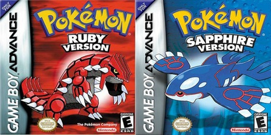

Dit is een kaart van Hoenn een gebied in de pokemon game Ruby, Sapphire en Emerald, in begin 2000 zijn uitgebracht.
Als je op een van de knoppen drukt krijg je een plaatje te zien van de stad hoe ze in de game zouden uitzien, met de Japanse naam eronder.
